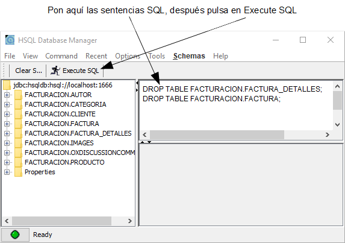

Curso:
1. Primeros pasos |
2. Modelo básico del dominio (1) |
3. Modelo básico del dominio (2) |
4. Refinar la interfaz de usuario |
5. Desarrollo ágil |
6. Herencia de superclases mapeadas |
7. Herencia de entidades |
8. Herencia de vistas |
9. Propiedades Java |
10. Propiedades calculadas |
11. @DefaultValueCalculator en colecciones |
12. @Calculation y totales de colección |
13. @DefaultValueCalculator desde archivo |
14. Evolución del esquema manual |
15. Cálculo de valor por defecto multiusuario |
16. Sincronizar propiedades persistentes y calculadas |
17. Lógica desde la base de datos |
18. Validando con @EntityValidator |
19. Alternativas de validación |
20. Validación al borrar |
21. Anotación Bean Validation propia |
22. Llamada REST desde una validación |
23. Atributos en anotaciones |
24. Refinar el comportamiento predefinido |
25. Comportamiento y lógica de negocio |
26. Referencias y colecciones |
A. Arquitectura y filosofía |
B. Java Persistence API |
C. Anotaciones |
D. Pruebas automáticas
Una entidad puede heredar de otra entidad. Esta herencia de entidades es una herramienta muy útil para simplificar tu modelo. Vamos a usarla para añadir una nueva entidad,
Pedido, a tu aplicación
facturacion.
Si no te gustan los videos sigue las instrucciones a continuación.
Nueva entidad Pedido
Queremos añadir un nuevo concepto a la aplicación
facturacion: pedido. Mientras que una factura es algo que quieres cobrar a tu cliente, un pedido es algo que tu cliente te ha solicitado. Estos dos conceptos están fuertemente unidos, porque cobrarás por las cosas que tu cliente te ha pedido y tú le has servido.
Sería interesante poder tratar pedidos en tu aplicación y asociar estos pedidos con sus correspondientes facturas. Tal como muestra el siguiente diagrama UML:

Y con código Java:
@Entity
public class Factura {
@OneToMany(mappedBy="factura")
Collection<Pedido> pedidos;
...
}
@Entity
public class Pedido {
@ManyToOne // Sin carga vaga (1)
Factura factura;
...
}
Es decir, una factura tiene varios pedidos y un pedido puede referenciar a una factura. Fíjate como no usamos inicialización vaga (lazy fetching) para la referencia
factura (1), esto es por un bug de Hibernate cuando la referencia contiene la relación bidireccional (es decir, es la referencia declarada en el atributo
mappedBy del
@OneToMany).
¿Cómo es
Pedido? Bien, tiene un cliente, unas líneas de detalle con producto y cantidad, un año y un número. Algo así como esto:

Curiosamente, este diagrama UML es idéntico al diagrama de
Factura. Es decir, para crear tu entidad
Pedido puedes copiar y pegar la clase
Factura, y asunto zanjado. Pero, ¡espera un momento! ¿“Copiar y pegar” no era un pecado mortal? Hemos de encontrar una forma de reutilizar
Factura para
Pedido.
DocumentoComercial como entidad abstracta
Una manera práctica de reutilizar el código de
Factura para
Pedido es usando herencia, además es una excusa perfecta para aprender lo fácil que es usar la herencia con JPA y OpenXava.
En la mayoría de las culturas orientadas a objetos has de observar el precepto sagrado
es un. Esto significa que no podemos hacer que
Factura herede de
Pedido, porque una
Factura no es un
Pedido, y por la misma regla no podemos hacer que
Pedido descienda de
Factura. La solución para este caso es crear una clase base para ambos,
Pedido y
Factura. Llamaremos a esta clase
DocumentoComercial.
Aquí tienes el diagrama UML para
DocumentoComercial:

Y aquí tienes la misma idea expresada con Java:
public class DocumentoComercial { ... }
public class Pedido extends DocumentoComercial { ... }
public class Factura extends DocumentoComercial { ... }
Empecemos a refactorizar el código actual. Primero, renombra (usando
Refactor > Rename)
Factura como
DocumentoComercial. Después, edita el código de
DocumentoComercial para declararla como una clase abstracta, así:
abstract public class DocumentoComercial // Añadimos el modificador abstract
Queremos crear instancias de
Factura y
Pedido, pero no queremos crear instancias de
DocumentoComercial directamente, por eso la declaramos abstracta.
Factura refactorizada para usar herencia
Ahora, has de crear la entidad
Factura extendiéndola de
DocumentoComercial. Puedes ver el nuevo código de
Factura:
package com.tuempresa.facturacion.modelo;
import javax.persistence.*;
import lombok.*;
@Entity @Getter @Setter
public class Factura extends DocumentoComercial {
}
Factura tiene ahora un código bastante breve, de hecho el cuerpo de la clase está, por ahora, vacío.
Este nuevo código necesita un esquema de base de datos ligeramente diferente, ahora las facturas y los pedidos se almacenarán en la misma tabla (la tabla DocumentoComercial) usando una columna discriminador. Por tanto has de borrar las viejas tablas ejecutando las siguientes sentencias SQL:
DROP TABLE FACTURA_DETALLES;
DROP TABLE FACTURA;
Para ejecutar estas sentencias SQL, primero asegurate de que tu aplicación se esté ejecutando, después usa la opción de menú
OpenXava > Database Manager de OpenXava Studio:

Después:

Ya puedes ejecutar el módulo
Factura y verlo funcionando en tu navegador. Lanza también
PruebaFactura. Tiene que salirte verde.
Si usas tu propia versión de Eclipse o IntelliJ puedes ejecutar Database Manager ejecutando la tarea Ant
runDBManager de
OpenXava/build.xml.
Crear Pedido usando herencia
Gracias a
DocumentoComercial el código para
Pedido es más sencillo que el mecanismo de un sonajero:
package com.tuempresa.facturacion.modelo;
import javax.persistence.*;
import lombok.*;
@Entity @Getter @Setter
public class Pedido extends DocumentoComercial {
}
Después de escribir la clase
Pedido, aunque de momento esté vacía, ya puedes usar el módulo
Pedido desde tu navegador. Sí, a partir de ahora crear una nueva entidad con una estructura parecida a
Factura, es decir cualquier entidad para un documento comercial, es simple y rápido. Un buen uso de la herencia es una forma elegante de tener un código más simple.
El módulo
Pedido funciona perfectamente, pero tiene un pequeño problema. El nuevo número de pedido lo calcula a partir del último número de factura, no de pedido. Esto es así porque el calculador para el siguiente número lee de la entidad
Factura. Un solución obvia es mover la definición de la propiedad
numero de
DocumentoComercial a
Factura y
Pedido. Aunque, no lo vamos a hacer así, porque en la siguiente lección refinaremos la forma de calcular el número de documento, de momento simplemente haremos un pequeño ajuste en el código actual para que no falle. Edita la clase
CalculadorSiguienteNumeroParaAnyo y en la consulta cambia “Factura” por “DocumentoComercial”, dejando el método
calculate(), así:
public Object calculate() throws Exception {
Query query = XPersistence.getManager().createQuery(
"select max(f.numero) from " +
"DocumentoComercial f " + // DocumentoComercial en vez de Factura
"where f.anyo = :anyo");
query.setParameter("anyo", anyo);
Integer ultimoNumero = (Integer) query.getSingleResult();
return ultimoNumero == null?1:ultimoNumero + 1;
}
Ahora buscamos el número máximo de cualquier tipo de documento comercial del año para calcular el nuevo número, por lo tanto la numeración es compartida para todos los tipos de documentos. Esto lo mejoraremos en la siguiente lección para separar la numeración para facturas y pedidos; y para tener un mejor soporte de entornos multiusuario.
Convención de nombres y herencia
Fíjate que no has necesitado cambiar el nombre de ninguna propiedad de
Factura para hacer la refactorización. Esto es por el siguiente principio práctico:
No uses el nombre de clase en los nombres de miembro, por ejemplo, dentro de una clase
Cuenta no uses la palabra “Cuenta” en ningún método o propiedad:
public class Cuenta { // No usaremos Cuenta en los nombres de los miembros
private int numeroCuenta; // Mal, porque usa “cuenta”
private int numero; // Bien, no usa “cuenta”
public void cancelarCuenta() { } // Mal, porque usa “Cuenta”
public void cancelar() { } // Bien, no usa “cuenta”
...
}
Usando esta nomenclatura puedes refactorizar la clase
Cuenta en una jerarquía sin renombrar sus miembros y además puedes escribir código polimórfico con
Cuenta.
Asociar Pedido con Factura
Hasta ahora,
Pedido y
Factura son exactamente iguales. Vamos a hacerles sus primeras extensiones, que va a ser asociar
Pedido con
Factura, como se muestra en el diagrama:
Solo necesitas añadir una referencia desde
Pedido a
Factura:
package com.tuempresa.facturacion.modelo;
import javax.persistence.*;
import lombok.*;
@Entity @Getter @Setter
public class Pedido extends DocumentoComercial {
@ManyToOne
Factura factura; // Referencia a factura añadida
}
Por otra parte en
Factura añadimos una colección de entidades
Pedido:
package com.tuempresa.facturacion.modelo;
import java.util.*;
import javax.persistence.*;
import lombok.*;
@Entity @Getter @Setter
public class Factura extends DocumentoComercial {
@OneToMany(mappedBy="factura")
Collection<Pedido> pedidos; // Colección de entidades Pedido añadida
}
Después de escribir este código tan simple, ya puedes probar estas, recién creadas, relaciones. Reinicia tu aplicación y abre tu navegador y explora los módulos
Pedido y
Factura. Fíjate como al final de la interfaz de usuario de
Pedido tienes una referencia a
Factura. El usuario puede usar esta referencia para asociar una factura al pedido actual. Por otra parte, si exploras el módulo
Factura, verás una colección de pedidos al final. El usuario puede usarla para añadir pedidos a la factura actual.
Intenta añadir pedidos a la factura y asociar una factura a un pedido. Funciona, aunque la interfaz de usuario es un poco fea. No te preocupes, mejoraremos esto en la siguiente lección.
Resumen
Esta lección te ha mostrado algunos ejemplos prácticos sobre como usar herencia de Java con entidades JPA para simplificar tu código. Hemos usado la configuración por defecto de JPA para la herencia, aunque puedes refinar el comportamiento de JPA para la herencia con anotaciones como
@Inheritance,
@DiscriminatorColumn,
@DiscriminatorValue, etc. Para aprender más acerca de la herencia en JPA puedes leer la documentación del
apéndice B.